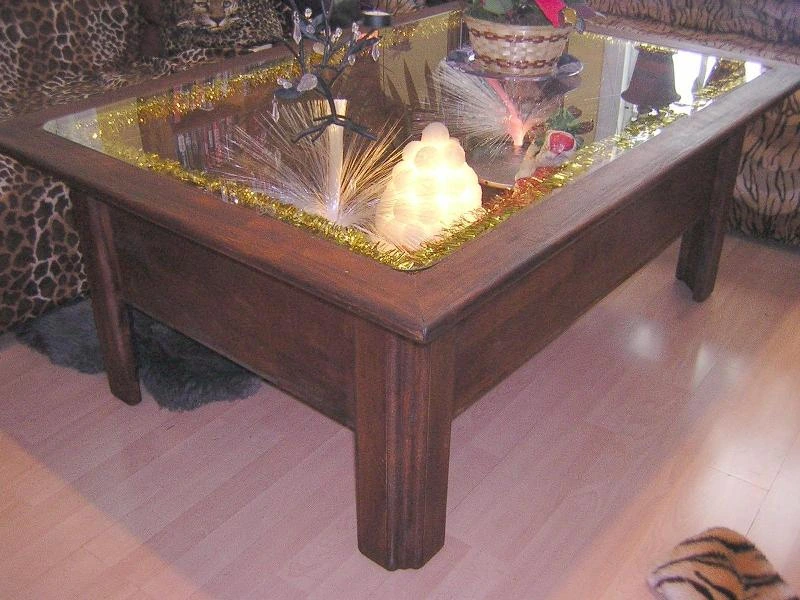
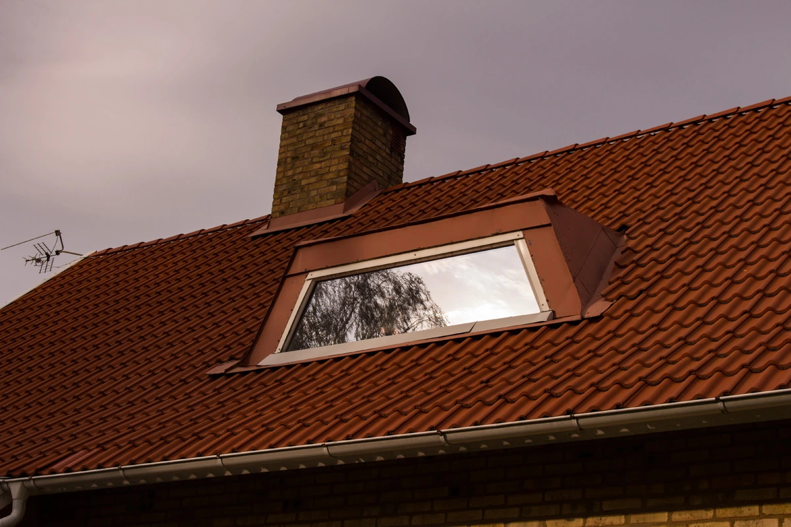
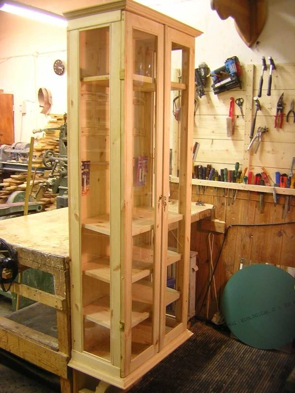
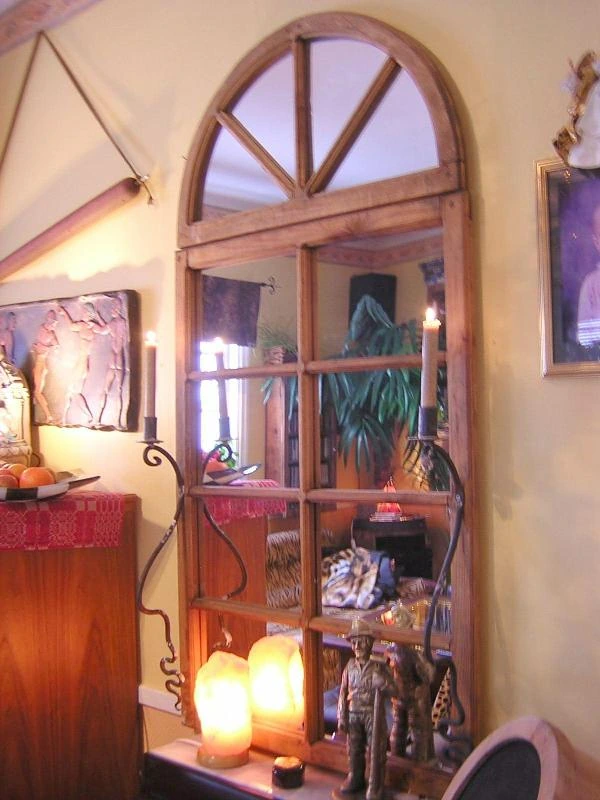

070-444 25 98Skogstorpsvägen 3, Lindesberg
Ett urval ur Lindesnickarns bildarkiv. Öppna bilderna och se snickerierna på nära håll.




En lös idé räcker som början. Kenneth hjälper dig vidare med form, mått och möjligheter.